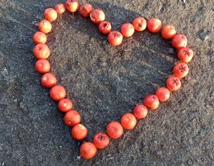

Leaf Art
The images I make often describe what is in my mind at the
time, or relate to a friend or seasonal change, eg I made a cyclist for my
cycling friend’s birthday, a birthday cake on my birthday, a sunset for the
solstice. Other times, I see a feather
and think ‘that looks like a bird’, and I’m off creating another world…
Sometimes I like to create geometric patterns: I let the materials suggest what
they would like to become.
The
images are all ephemeral, lasting a few minutes or hours, being blown away by
the wind or nudged by a curious dog, they gradually return to the land. I take a photo and accept the transient
nature of the original image. To
be honest, it is quite liberating not to have to do anything with it except
take a photo and see what happens! On
another level it makes me think of the transient nature of experiences and
about enjoying the moment.


Shadow Puppetry
Wreath Making
created with
Website Builder Software .